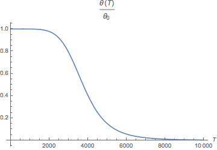
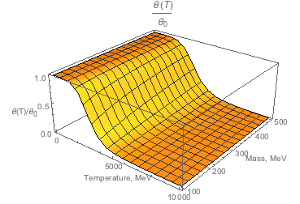

The models considered
We are interested in constraining the arbitrary sterile neutrino model, which is defined by the See-Saw Lagrangian:
\begin{equation} \mathcal{L} = \mathcal{L}_{SM}+ i \bar N_I \partial_\mu \gamma^\mu N_I - \left(F_{\alpha I} \,\bar L_\alpha N_I \tilde \phi - \frac{M_I}{2} \; \bar {N_I^c} N_I + h.c.\right) \end{equation}
Number of sterile neutrinos
We are free to consider an arbitrary number of sterile neutrinos species, but the most interest comprise the case of 1 light sterile neutrino with negligible in the context of the BBN coupling constant and 2 heavy degenerate in mass sterile neutrinos. The first specie won't affect the observables, but heavier particles with higher interaction rates might survive until the BBN.
Degeneracy in mass also allows to treat 2 Majorana fermions as a single Dirac particle - effectively substituting the doubling of the reactions due to charge conjugation with the notion of the antiparticle.
However, more heavy sterile neutrino generations can be considered.
Coupling constants
There are 3 mixing angles corresponding to each sterile neutrino specie (Dirac or Majorana). The lifetime of the particle depends on them in a non-trivial way, but for any given set of mixing angles it is possible to derive the mass range in which this particular realization of the sterile neutrino will survive until the BBN.
Particular values for the coupling constants can be determined from neutrino oscillations experiments, so it is useful to use similar parametrization.
It is convenient to define the sterile neutrino mixing angles as running with mass:
$$ \theta_{M_N} = \theta_{M'} \sqrt{\frac{M'}{M_N}} $$
And normalized by some parameter on which resulting neutrino masses do not depend:
$$ \theta_{M_N} \propto |z| $$
Particular choice of $|z|$, $M'$ and $\theta_M'$s ratios correspond to specific active neutrinos masses.
Typical decay width and lifetime in such parametrization look like:
$$ \theta_e = 1.14 \cdot 10^{-4} \frac{|z|}{\sqrt{M_N}} \\ \theta_\mu = 6.16 \cdot 10^{-4} \frac{|z|}{\sqrt{M_N}} \\ \theta_\tau = 5.65 \cdot 10^{-4} \frac{|z|}{\sqrt{M_N}} $$
By allowing the variation of normalization of mixing angles, one can determine the models affecting BBN predictions:
Meaning that all the sterile neutrinos models below the $0.01$ contour will survive at the times of BBN and might affect the observables.
Of course, this is just a single projection of the multidimensional parameter space, but it is a useful one to compare with oscillation experiments.
Mixing angle temperature dependence
A simple example of influence of the medium on sterile neutrino mixing (as well as active neutrinos oscillations) is the Miheev-Smirnov-Wolfenstein (MSW) effect. It is discussed in the theory of solar neutrinos oscillations and captures the influence of the solar $e^-$-$e^+$ plasma on the propagation of neutrinos.
However, the MSW correction is proportional to electron-positron density difference and becomes prominent only in highly asymmetric medium like the Sun. An approach of the quantum field theory at finite temperatures allows to obtain more general result for the temperature dependence of the $\theta$:
We assume no significant lepton asymmetry, so the main contribution comes from the $b$ function.

From these plots we can that temperature corrections become significant only at temperatures of the order of couple $GeV$s, so as long as sterile neutrinos decouple at later times, we can assume the mixing angles equal to the vacuum ones.
TODO: looks like this effect can be derived simply by calculating a single correction of the neutrino propagator (in the flavor basis there are no corrections sterile neutrinos) through the $W-e$ loop. $W$-boson propagator leading term gives MSW-like correction and a term, suppressed by $m_e / m_N$. The subleading term will hopefully give the desired $b$-function. The only thermal QFT information used is the electron thermal propagator.